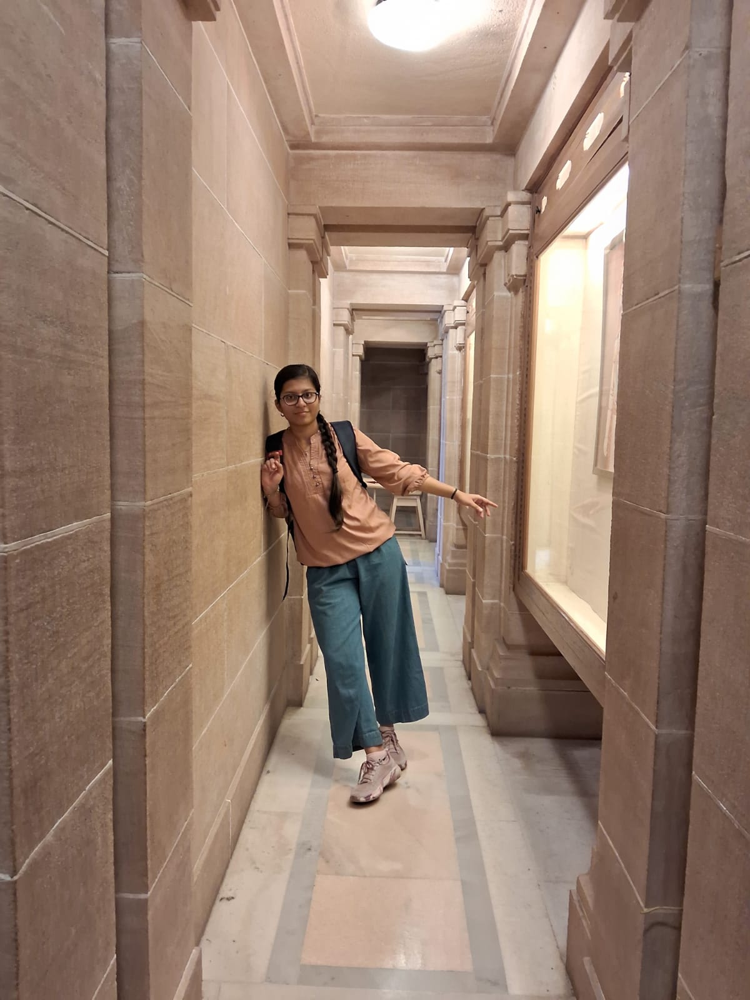

Mayuri R. Pujari

Summary
I always try my hardest to be good in new evolving technologies.
Education
-
Pre-Primary Education:
- PNK Vidya Mandir [2008-2010]
- Ravindra Balak Mandir [2010-2011]
-
Primary Education:
- Shree Sharda Mandir Prathamik Shala [2011-2015]
-
Secondary Education:
- Shree Sharda Mandir Kanya Prashala [2015-2021]
-
Higher Seconday Education:
- S.B.E.S College of Science Aurangabad [2021-2023]
-
Bachelor's Graduation:
[Current]
- Indian Institute of Technology Jodhpur [2023-2027]
Skills:
- Programming Languages
- HTML
- CSS
- Canva
- Figma
- Presentation Skills
- Designing skills
Awards and Certifications:
- District rank holder [NSSE Competitive exam- 7th standard]
- District rank holder [NSSE Competitive exam- 8th standard
- Governmet Scholarship [8th Standard Competitive exam]
- Homi Bhabha 2nd Level Qualified [9th standard]
- NTSE Scholarship exam [10th standard]
- Won 1st prize in Inter school Sanskrit speech competition
- Won 1st prize in Ramkrishna Mission Sanskrit Singing Competion
- Best student of the year [10th standard-28/08/2021]
- Sanskrit Scholarship for scoring 100% every year
- JEE Mains [Qualified-General]
- JEE Advanced [Qualified-General]
Others:
copyright_Mayuri_R_Pujari. All rights reserved.